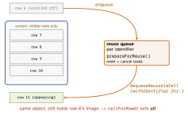
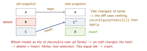

ios-swift · folio
In one line: A list keeps only the visible cells alive and recycles them — so a
dequeued cell is used, never blank. A diffable data source replaces index math:
you describe the whole desired state as a snapshot of unique Hashable IDs,
apply it, and UIKit computes the inserts/deletes/moves.
Download PDF Print view LaTeX source

How it works
UITableViewDataSource(what to show) — required:tableView(_:numberOfRowsInSection:),tableView(_:cellForRowAt:); optionalnumberOfSections(in:).UITableViewDelegate(behaviour) —didSelectRowAt,heightForRowAt,willDisplay. Both heldweak.- Reuse:
register(_:forCellReuseIdentifier:)once, thendequeueReusableCell(withIdentifier:for:)— always returns a cell (crashes if unregistered). OlddequeueReusableCell(withIdentifier:)may returnnil. A cell leaving the screen goes to a per-identifier reuse queue;prepareForReuse()runs before it comes back. - Stale content = a recycled cell still shows the last row’s image/check/colour, because
cellForRowAtset it only on some paths, or an async image load finished after reuse. Fix: set every property on every path; inprepareForReusereset transient state + cancel the load; on completion check the cell still shows the same ID. - Manual updates: change the model first, then
performBatchUpdateswithinsertRows/deleteRows. Counts must add up orNSInternalInconsistencyException(“invalid number of rows”). UICollectionView= same data source/delegate/reuse, plus a layout object:UICollectionViewFlowLayoutorUICollectionViewCompositionalLayout(item → group → section); lists viaUICollectionLayoutListConfiguration(iOS 14).- Diffable (iOS 13):
UITableViewDiffableDataSource/UICollectionViewDiffableDataSource<SectionID, ItemID>; both generic paramsHashable; created with acellProviderclosure.NSDiffableDataSourceSnapshotis a struct:appendSections,appendItems(_:toSection:),deleteItems,moveItem(_:beforeItem:), thenapply(_:animatingDifferences:). Edit the live one viadataSource.snapshot(). Map positions withitemIdentifier(for:)/indexPath(for:). - Same ID, new content:
reconfigureItems(iOS 15) re-runs the config on the existing cell — cheap, keeps state.reloadItems(iOS 13) throws the cell away and dequeues a new one. Prefer reconfigure unless the cell type changes. CellRegistration(iOS 14): typed cell + config closure, no string IDs;dequeueConfiguredReusableCell(using:for:item:). Headers needsupplementaryViewProvider(collection) or a subclass overridingtitleForHeaderInSection(table).
Example
enum Section: Hashable { case main }
let reg = UICollectionView.CellRegistration
<UICollectionViewListCell, Todo.ID> { cell, _, id in
var c = cell.defaultContentConfiguration()
c.text = store[id]?.title // read LIVE data by id
cell.contentConfiguration = c // set EVERY property
}
ds = UICollectionViewDiffableDataSource<Section, Todo.ID>(
collectionView: cv) { cv, ip, id in
cv.dequeueConfiguredReusableCell(using: reg, for: ip, item: id) }
var snap = NSDiffableDataSourceSnapshot<Section, Todo.ID>()
snap.appendSections([.main])
snap.appendItems(todos.map(\.id)) // ids UNIQUE
ds.apply(snap, animatingDifferences: true)The reuse pool

Snapshot diff: IDs, not content

Traps
- “Diffable detects content changes.” No — it diffs identifiers only. Same ID + new title = no update until
reconfigureItems/reloadItems. - Duplicate IDs anywhere in the snapshot (across sections too) → runtime crash. Never use a display name as the ID.
- Caching an
IndexPathacross anapply— positions shift; convert to the ID withitemIdentifier(for:)immediately. - Config closure capturing a model copy → reconfigure shows old data. Look it up by ID.
- Apply from main or always the same background queue — never mix.
prepareForReuseis not the place to set content — that iscellForRowAt.
UITableViewCell.CellStyle
.default | title only (+ image) |
.subtitle | title, smaller grey subtitle below |
.value1 | title left, detail right-aligned (Settings) |
.value2 | small blue label, then detail (Contacts) |
defaultContentConfiguration() replaces textLabel /
detailTextLabel.
Remember
“The pool gives you a used cell — set everything, assume nothing.” “Snapshot = IDs; content = your store; reconfigure = repaint.”